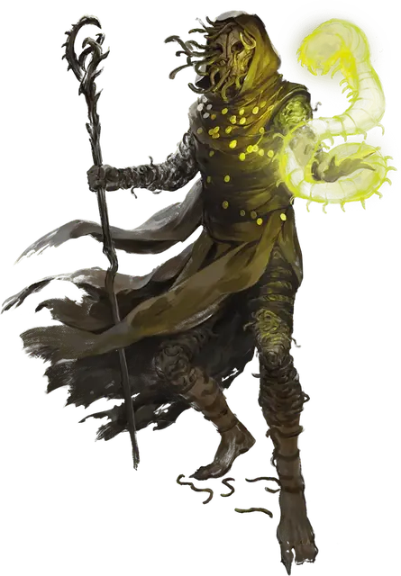

Последователь культа аберрации
Aberrant Cultist
Средний или Маленький Гуманоид, Нейтральный Злой

Класс Защиты 14 Инициатива +7 (17)
Хиты 137 (25к8 + 25)
Скорость 30 футов
| мод | спас | ||
|---|---|---|---|
| СИЛ | 10 | +0 | +0 |
| ЛОВ | 19 | +4 | +4 |
| ТЕЛ | 12 | +1 | +1 |
| мод | спас | ||
|---|---|---|---|
| ИНТ | 16 | +3 | +6 |
| МДР | 18 | +4 | +7 |
| ХАР | 15 | +2 | +2 |
Чувства Тёмное зрение 90 футов, пассивное Восприятие 17
Языки Общий, Глубинная речь, Телепатия 30 фт.
Опасность 8 (3 900 опыта; БВ +3)
Действия
Мультиатака. Культист совершает две атаки Ударом щупальцем. Он может заменить каждую атаку использованием Гниения разума.
Удар щупальцем. Бросок рукопашной атаки: +7, досягаемость 10 фт. Попадание: 7 (1к6 + 4) Рубящего урона плюс 14 (4к6) Психического урона. Если цель — существо Большого размера или меньше, она становится Схваченной (Сл освобождения от захвата 14) одним из двух щупалец; пока длится захват, она также Опутана.
Гниение разума. Спасбросок Мудрости: Сл 15, одно видимое культистом существо в 90 футах. Провал: 27 (6к8) Психического урона, и цель становится Отравленной до начала следующего хода культиста. Успех: Только половина урона.
Сотворение заклинаний. Культист сотворяет одно из следующих заклинаний (заклинательная характеристика — Мудрость, Сл спасброска заклинаний 15):
Неограниченно: Малая иллюзия, Обнаружение мыслей
Реакции
Контрзаклинание (2/день). Культист сотворяет Контрзаклинание в ответ на условие этого заклинания (заклинательная характеристика — та же, что для Сотворения заклинаний).
Бонус мастерства +3
Среда обитания Любая
Сокровища Личные, Реликварные
Культисты
Фанатики и пророки конца
С помощью магии и сомнительных практик культисты распространяют радикальные воззрения. Пока одни втайне охотятся за оккультным знаниями, другие организуют тайные общества, стремящиеся привести мир к страшному концу.
Обычно в основе культа лежит иерархия, построенная вокруг харизматичного и властного лидера. Хотя члены культа могут действовать самостоятельно, они подчиняются указаниям от вышестоящих участников, наделённых сверхъестественными способностями. Культы могут строиться на основе любой мистической традиции, но зачастую они служат сверхъестественным силам.
Последователи культа аберрации стремятся получить от потусторонних сил способности к управлению разумом. Эти культисты связаны с чудовищами, такими как аболеты и свежеватели разума, или с потусторонними силами, такими как Ктулху, Хадар, Итьяк-Ортил, Поедатель Эльфов, Ньярлатотеп, зловещие звёзды или сущности из Дальнего Предела.
Планы культа
Культисты зачастую практикуют малоизвестные магические обряды или помешаны на трактовке древних пророчеств. В основе их веры лежит почитание сверхъестественных покровителей: божеств, потусторонних сущностей, коварных чужеродных разумов или других загадочных сил.
Совершите бросок по таблице «План культиста» для вдохновения или выберите сами заветную цель культиста.
План культиста
| 1к6 | Культист стремится… |
| 1 | Свергнуть существующий порядок, завершить эпоху или уничтожить мир. |
| 2 | Развеять лживую иллюзию привычной реальности и раскрыть забытые или ужасные истины. |
| 3 | Распространить свою веру с помощью ментального контроля и сверхъестественного принуждения. |
| 4 | Изменить географию мира, например затопить земли или пробудить вулканы. |
| 5 | Преобразовать жизнь в глобальных масштабах, изменяя тела или души других созданий. |
| 6 | Призвать своё божество или его вестника, оружие или царство в свой мир. |
Оккультные символы
Как правило, культы отождествляют себя с символами, которые воплощают их убеждения. Такие знаки можно найти на значимых для них объектах, а также на одеяниях и телах самих культистов. Они могут быть общеизвестными или иметь значение только внутри культа. Совершите два броска по таблице «Символ культа» для вдохновения или выберите сами описание знака тайного сообщества.
Символ культа
| 1к10 | Символом культа является… | Он представлен в виде… |
| 1 | Алхимический знак | Календаря или карты |
| 2 | Животное | Герба или эмблемы рода |
| 3 | Небесное тело | Сложной схемы |
| 4 | Знака божества | Метафорического образа |
| 5 | Стихия | Мистической сущности |
| 6 | Глаз | Частью уравнения |
| 7 | Геометрическая фигура | Повторяющегося узора |
| 8 | Буква или число | Ряда царапин |
| 9 | Часть чудовища | Простой пиктограммы |
| 10 | Череп | Оружия или инструмента |